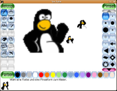
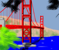
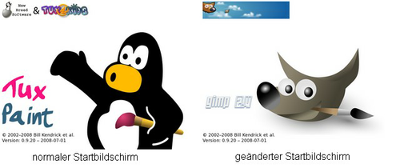

Tux Paint
Dieser Artikel wurde für die folgenden Ubuntu-Versionen getestet:
Ubuntu 16.04 Xenial Xerus
Ubuntu 14.04 Trusty Tahr
Zum Verständnis dieses Artikels sind folgende Seiten hilfreich:
Tux Paint  ist ein Malprogramm, das hauptsächlich für Kinder zwischen 3 und 12 Jahren gedacht ist. Obwohl das Programm eher zu Lernzwecken gemacht ist, kann man damit auch sehr gute Ergebnisse erzielen. Zudem lassen sich einfach neue Stempel einfügen.
ist ein Malprogramm, das hauptsächlich für Kinder zwischen 3 und 12 Jahren gedacht ist. Obwohl das Programm eher zu Lernzwecken gemacht ist, kann man damit auch sehr gute Ergebnisse erzielen. Zudem lassen sich einfach neue Stempel einfügen.
Installation¶
Zur Installation von Tux Paint muss das folgende Paket installiert [1] werden:
tuxpaint (universe)
 mit apturl
mit apturl
Paketliste zum Kopieren:
sudo apt-get install tuxpaint
sudo aptitude install tuxpaint
Möchte man Einstellungen vornehmen, so muss folgendes Paket installiert werden:
tuxpaint-config (universe, optional - wird nicht zur Ausführung des Programms benötigt )
mit apturl
Paketliste zum Kopieren:
sudo apt-get install tuxpaint-config
sudo aptitude install tuxpaint-config
Möchte man noch ein paar zusätzliche Stempel hinzufügen, kann man folgendes Paket installieren:
tuxpaint-stamps-default (universe)
mit apturl
Paketliste zum Kopieren:
sudo apt-get install tuxpaint-stamps-default
sudo aptitude install tuxpaint-stamps-default
Bedienung¶
 Nach der Installation kann man Tux Paint bei Ubuntu-Varianten mit einem Anwendungsmenü über "Bildung -> Tux Paint" starten [3].
Die Bedienung von Tux Paint ist einfach. Auf der linken Seite hat man verschiedene Werkzeuge wie Stempel, Pinsel oder Linien. Diese wählt man mit einem Mausklick aus, woraufhin man auf der rechten Seite zwischen verschiedenen Arten der Werkzeuge wählen kann, wie z.B. Linienstärke oder verschiedenen Stempeln. Dann muss man einfach die Maus in das Projekt bewegen und mit der linken Maustaste ( ) klicken. Zudem hat man am unteren Bildschirmrand einen freundlichen Pinguin, der einem auch Ratschläge gibt.
) klicken. Zudem hat man am unteren Bildschirmrand einen freundlichen Pinguin, der einem auch Ratschläge gibt.
Gespeicherte Bilder in anderen Programmen weiterverwenden¶
Wenn man ein Bild erstellt und dieses speichert, wird man nicht nach dem Speicherort gefragt. Stattdessen wird es automatisch unter ~/.tuxpaint/saves [6] im png-Format gespeichert. Sollen die Bilder in einem anderen Programm weiterverwendet werden, empfiehlt es sich, sie an einen anderen Ort zu verschieben.
Möchte man bereits bestehende Bilder mit Tux Paint bearbeiten, so muss man diese zunächst ins png-Format umwandeln und in das erwähnte Verzeichnis kopieren.
Erweiterungen¶
Neue Stempel hinzufügen¶
Im Ordner /usr/share/tuxpaint/stamps/cartoon/tux/ befinden sich alle Stempel im png-Format. Möchte man also neue Stempel hinzufügen, muss man lediglich die gewünschten png-Dateien in dieses Verzeichnis kopieren. Dies können z.B. auch selbst erstellte Fotos oder Bilder, aber auch Icons aus dem Wiki oder vorgefertigte Stempel sein, die man sich hier herunterladen kann. Der Kopiervorgang muss natürlich mit Root-Rechten [7] erfolgen.
Werkzeuge mit Geräuschen hinterlegen¶
Alle Werkzeuge wie Stempel oder Pinsel lassen sich mit Geräuschen hinterlegen. Dazu muss in dem Ordner, in dem sich die Bilddatei befindet, eine gleichnamige Sounddatei mit der Dateiendung .wav bzw. .ogg liegen. Also muss zum Stempel frog.png in dem selben Ordner die Datei frog.ogg liegen, damit der Sound beim Auswählen des Objekts funktioniert. Natürlich kann man sich auch selber Sound-Dateien zu Werkzeugen erstellen, wenn man keine passende Datei findet oder die existierende einem nicht gefällt.
|  |
| Wikipedia - Tux Paint |
Neue Vorlagen einbinden¶
Beim Erstellen eines neuen Bildes wird man nach der Verwendung einer Vorlage gefragt. Möchte man eine neue Vorlage hinzufügen, so muss man eine Bilddatei im PNG-Format mit Root-Rechten in den Ordner /usr/share/tuxpaint/starters kopieren und Tux Paint neu starten.
Startbildschirm ändern¶
Der Startbildschirm zeigt normalerweise das Logo, Credits und den Namen des Programms an. Möchte man diese Informationen ändern, so muss man folgenden Dateien mit Root-Rechten ändern. Alle Dateien befinden sich im Ordner /usr/share/tuxpaint/images/
| Dateiname | Bedeutung | Befindet sich im Startbildschirm |
| title-credits.png | zeigt die Credits an | Links oben |
| title-tuxpaint.png | zeigt den Schriftzug "Tux Paint" | Links unten |
| title.png | zeigt das Tux Paint Logo an | Rechts unten |
Nach einem Neustart von Tux Paint sollten die Änderungen funktionieren.

Beispielzeichnungen¶
Es ist mit Tux Paint auch möglich, Zeichnungen zu erstellen, die sehr professionell aussehen. Eine große Auswahl solcher Zeichnungen kann man sich unter tuxpaint.org/gallery anschauen.

{kind=link}
- Erstellt mit Inyoka
-
 2004 – 2017 ubuntuusers.de • Einige Rechte vorbehalten
2004 – 2017 ubuntuusers.de • Einige Rechte vorbehalten
Lizenz • Kontakt • Datenschutz • Impressum • Serverstatus -
Serverhousing gespendet von